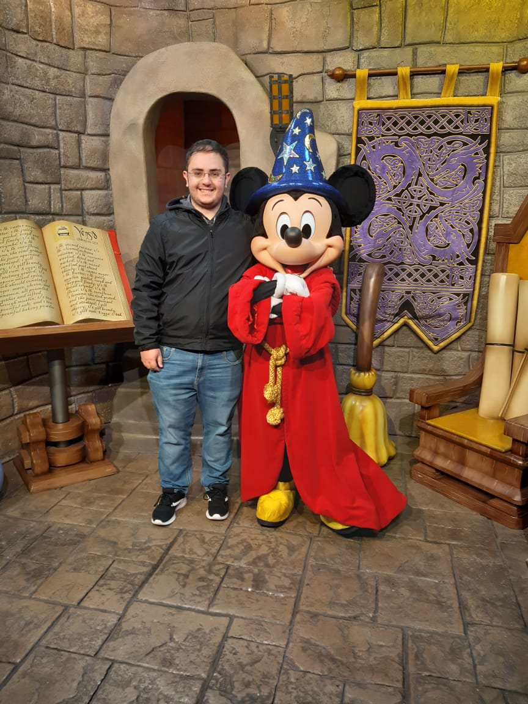

Estou aprendendo HTML
Olá! Meu nome é Leonardo Meneghetti Sani. Muito Prazer em conhece-los!
Tenho 24 anos,nasci e cresci em São Paulo, mais especificamente no bairro do Tatuapé onde eu moro até hoje, na zona leste da cidade.
Sou filho único e atualmente moro com minha mãe, a pessoa que sempre me apoiou e a mais importante da minha vida. Sempre tive com ela, desde criança, uma relação bastante aberta e amorosa.
Quase me formei geólogo. Cursei a graduação em geologia na Universidade de São Paulo durante 5 anos,abandonei no meio do TCC. Fui percebendo ao longo dos anos que aquilo não era o que eu queria para minha vida, principalmente quando estagiei numa empresa de geotecnia. Errei feio na minha escolha profissional.Entretanto, ao mesmo tempo, fiz grandes amizades,tive experiências de vida intensas que me fizeram amadurecer e crescer.Hoje tenho vontade de mudar de área de atuação e começar uma carreira no ramo da tecnologia.
Aprendi a mexer em alguns softwares específicos para geologia durante esses anos; ArcMap, QGis, Oasis Montaj e AutoCad foram alguns deles. Comecei a aprender a programar em Python por conta própria mas parei pela falta de tempo (Pretendo retomar e dominar essa ferramenta XD)
No meu tempo livre, gosto muito de ler, ver vídeos no Youtube, assistir a filmes e séries. Dentre minhas séries favoritas estão:
Um dos assuntos que eu mais gosto de estudar é História. Adoro ler livros a respeito dos mais variados temas. Tenho admiração por algumas personalidades históricas como por exemplo:
Sou grande fã de animações também. Gosto de saber sobre a história de criação das produções e de como os personagens foram concebidos.Dentre meus personagens favoritos estão:
Sou uma pessoa que tem defeitos em reconhecer os próprios pontos fortes, mas os que eu acho que tenho são
Meus pontos fracos em compensação são
: Para saber mais a meu respeito, abaixo disponibilizo um link para meu LinkedIn:
Ou ainda
Facebook do Leonardo
Obrigado! XD